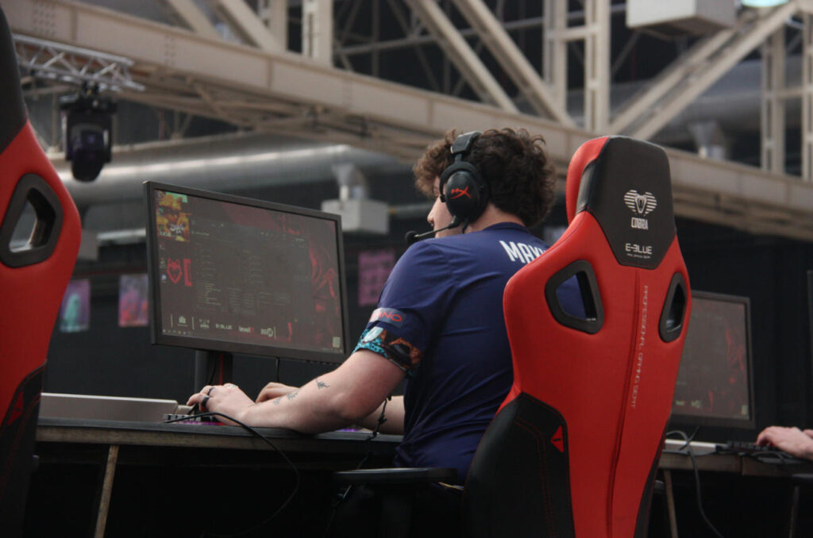

Contenido Principal
 |
Es el primer canal de videojuegos en catalán con acceso exclusivo de socios de Twitch. El canal de Gamesports Electrónicos se ha convertido en el primer canal de videojuegos ( gaming ) en catalán que obtiene el acceso al programa exclusivo de socios de Twitch. La noticia se confirmó ayer, durante la retransmisión en directo de la duodécima jornada de la competición. La noticia sitúa al canal catalán dentro del 0,1% de los canales de Twitch de todo el mundo que cuentan con verificación oficial y esto representa una mayor proyección global de los vídeos del canal y más visualización. |
es el primer canal de videojuegos en catalán con acceso exclusivo de socios de Twitch